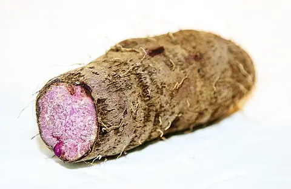

Main course · Popular in East, Central forests and South India
Wild yam curry
Wild yam curry is made with wild yam, a favourite in East, Central forests and South India.

How do you make wild yam curry?
Soaked and boiled yam chunks in a coconut or mustard curry.
Note. Only safe species, soaked and boiled well.
Wild ingredients
- Wild yam (Dioscorea): in season October to February
Watch the recipe

Video: shravani's kitchen on YouTube